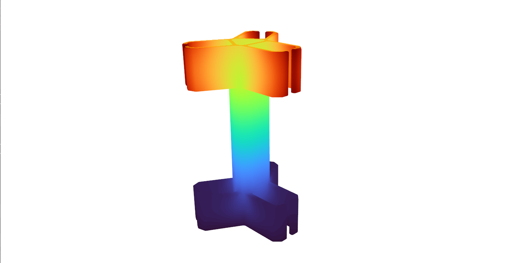
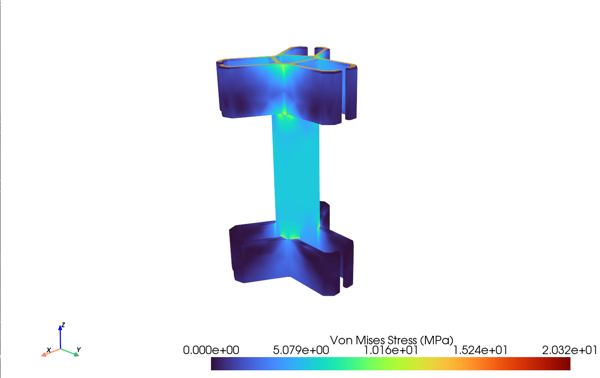
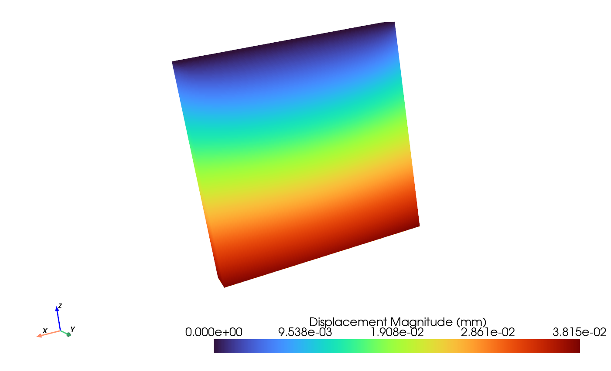
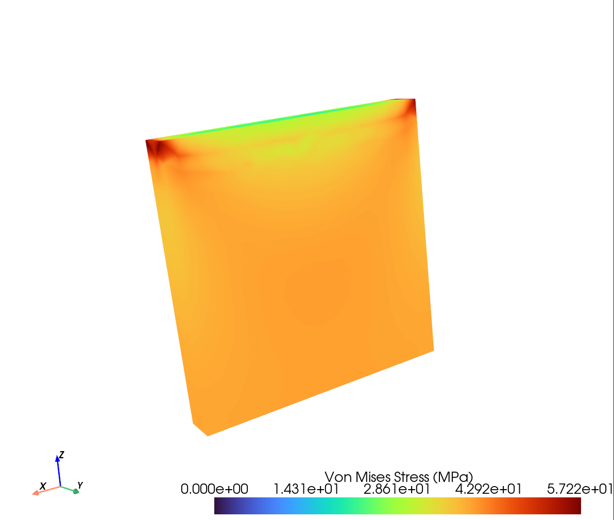

Making structural behavior visible
Color maps turn numerical results into an intuitive view of how a part moves under load.
From CAD Model to Structural Insight
I built a desktop engineering tool that predicts how a part bends and where stress develops under load. Users import a 3D CAD model, choose its material, select supports and loads, and explore the results through interactive color maps.
Finite element analysis (FEA) breaks a complex shape into small elements and solves their response together. This project connects that mathematics to a practical application: a Python interface, a custom C++ structural solver, and an interactive 3D viewer.
What I Built
- CAD-to-analysis workflow: STEP geometry import, automatic surface tagging, and Gmsh meshing with quadratic, 10-node tetrahedral elements.
- Custom numerical solver: element stiffness calculations, global sparse matrix assembly, boundary conditions, and linear elastic displacement and stress recovery.
- Performance-focused integration: Eigen sparse linear algebra, OpenMP parallel assembly, and nanobind bindings connecting C++ computation to Python.
- Interactive desktop experience: PyQt6 controls and PyVista visualization for selecting faces, applying constraints and distributed loads, and inspecting results.
Engineering & Software Skills
Applied computational mechanics, numerical methods, 3D meshing, sparse linear algebra, parallel programming, Python/C++ integration, and desktop interface development. Comparing results with SolidWorks Simulation also developed my ability to evaluate solver behavior and communicate numerical accuracy.
Results & SolidWorks Comparison
Maximum displacement within 5% of SolidWorks Simulation in the benchmark evaluated. The custom solver predicted 7.662 mm versus SolidWorks' 7.311 mm, a 4.8% difference. Both tools showed similar overall deformation and stress patterns.
The application performs linear elastic FEA solves and presents both displacement and von Mises stress, a combined measure used to assess stress in metals. In the same benchmark, peak stress was 46.53 MPa versus 52.42 MPa in SolidWorks, an 11.2% difference. The displacement agreement is encouraging; stress accuracy needs further mesh and boundary-condition checks.
The images below show two separate examples of the tool's output, illustrating how users inspect movement and stress. They are not the SolidWorks comparison case.

How much does the part move?
The deformation view shows how movement varies across the part, from the lower region in purple to the upper region in red.


Where does stress concentrate?
Stress visualization highlights areas to inspect during design review, with a displayed maximum of 20.32 MPa in this example.


Plate example: displacement
A smooth movement gradient across the plate, with a displayed maximum displacement of 0.03815 mm.


Plate example: stress
Stress concentrations near the upper corners, with a displayed maximum von Mises stress of 57.22 MPa.